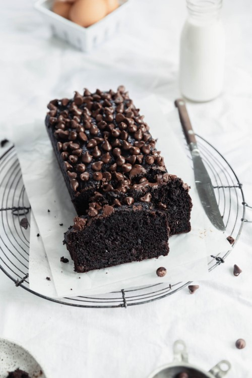

Cardamom Pistachio Zucchini Bread

Ingredients
- 1 ½ cups zucchini, shredded and pressed
- ¼ cup greek yogurt
- ¼ cup vegetable oil
- 1/2 cup brown sugar
- 2 teaspoons vanilla extract
- 2 eggs, room temperature
- ¾ cup all purpose flour
- ¾ cup cocoa powder
- 1 teaspoon baking soda
- ¼ teaspoon baking powder
- ½ teaspoon salt
- 1 cup semisweet chocolate chips, divided
Instructions
- Preheat the oven to 350°F.
- Using a cheese grater, finely grate the zucchini over a paper towel. Wrap the zucchini in the paper towel, press the zucchini to release some of the moisture. Don’t completely dry it out, but press firmly on it to dry out any excess moisture. Firmly press the zucchini into a measuring cup to measure out 1 ½ packed cups. If you need to grate more zucchini, repeat the process.
- In a large mixing bowl, combine the greek yogurt, oil, and brown sugar. Use a whisk to beat until combined. Add the vanilla and eggs one at a time, whisking between addition. Stir in the zucchini and set aside.
- In a separate bowl combine the flour, cocoa powder, baking soda, baking powder and salt. Stir in the wet ingredients into the dry ingredients until combined and no lumps of flour remain. Fold in ⅔ cup of chocolate chips, setting the other third aside for the top of the bread.
- Pour batter into your AllClad nonstick loaf pan and sprinkle the top with remaining chocolate chips. Bake for 45 minutes, or until the bread springs back when you touch it and a knife inserted into the middle comes out clean.